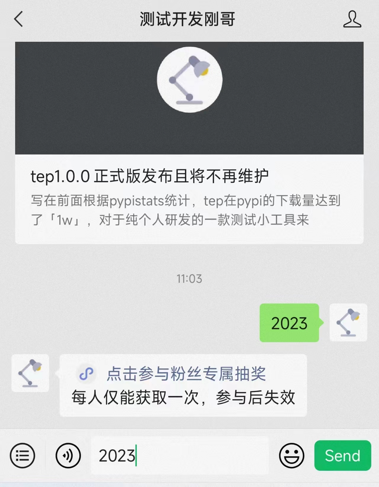

告别2022刚哥准备在2023年干几件大事¶

告别2022¶
2022年，因为反反复复的疫情，节奏被打得支离破碎。在12月份，政策放开，羊了个羊，发烧后，突然被按下暂停键，也让我看清楚了很多事情。2022年整体比较平淡，没有特别明显的上升，就简单总结10条：
公众号共发表50篇原创文章，平均阅读量超过200，有2篇500+；
原创小工具tep1.0.0正式发布，pypi安装量突破1w；
组件了EasyPytest测试平台开发团队，人数从48人精简到了15人，迭代一正在有序开展；
粉丝群达到了258人，这一年还是交流了很多，带来了很多思考，也拓展了认知；
在线电子书进行了全新改版；
参与了公司3个工具平台的部分功能开发：物料平台、度量平台、精准平台；
技术栈从Python切换为Java为主，上手之后也更喜欢Java的工程化；
整理了80道算法题，克服了编程的畏难心理，也以备不时之需；
搭建了测试知识体系；
口语表达经过日常的15分钟练习，有了明显进步；
展望2023¶
在2023年我准备干三件大事。
第一件事，技术变现。添加微信cekaigang，为您提供以下付费服务：写代码，改代码，指导编程，简历修改，模拟面试，职业规划，测试咨询等，价格随意。针对teprunner测试平台，我也会开发一套培训教程，一对一指导入门测试开发，具体内容应该会在3月底推出。待新版EasyPytest平台开发完成后，应该也会做一套培训教程。
第二件事，测试平台。作为测试开发，能自主开发一个测试平台，还是最基本的技能要求。我在2023年也会完全专注于EP平台的开发。开发模式仍然采用团队招募的方式，并且参与开发的阶段是永久免费的，相互探讨技术，体验纯粹的快乐，为开源添砖加瓦。迭代一预计3月底做完，后续迭代二的招募还是在粉丝群进行，感兴趣的小伙伴可以关注下。
第三件事，精品文章。目前还没有一篇文章阅读量上千，还是有些遗憾。2023年我将只在每个月的最后一天，早上八点，发布一篇文章。减少水文，多出精品。
羊的那几天，特别感受到时间和健康的珍贵，也下定了决心在2023年做出节奏调整，引用《但是还有书籍 第2季》里面沈燮元老先生的一句话：“过好每一天”。
最后，为大家送上新年礼物，祝愿大家新年快乐，身体健康：
在公众号后台回复【2023】关键字即可参与抽奖：
